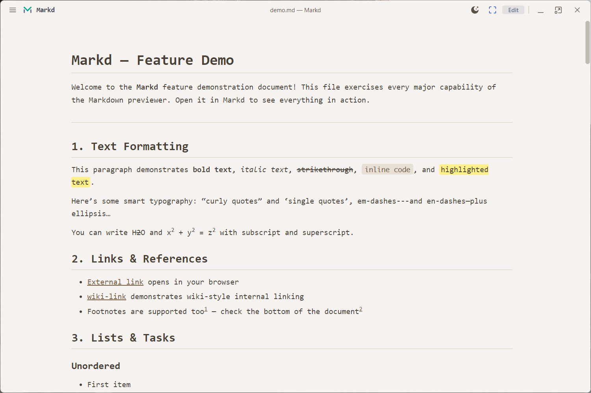
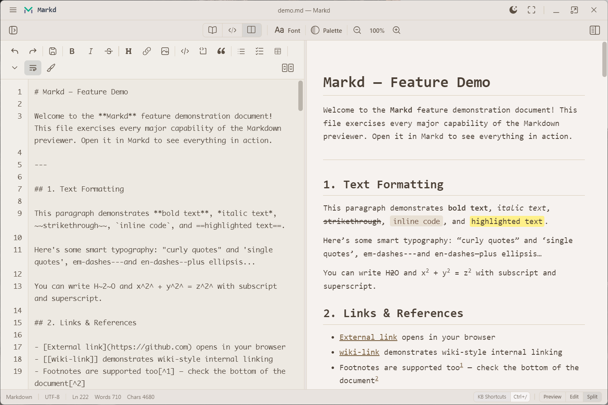
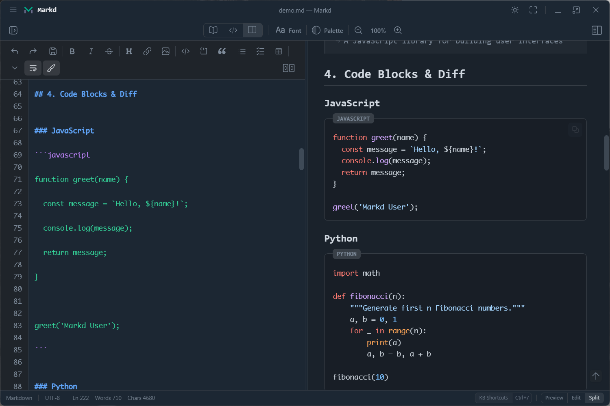
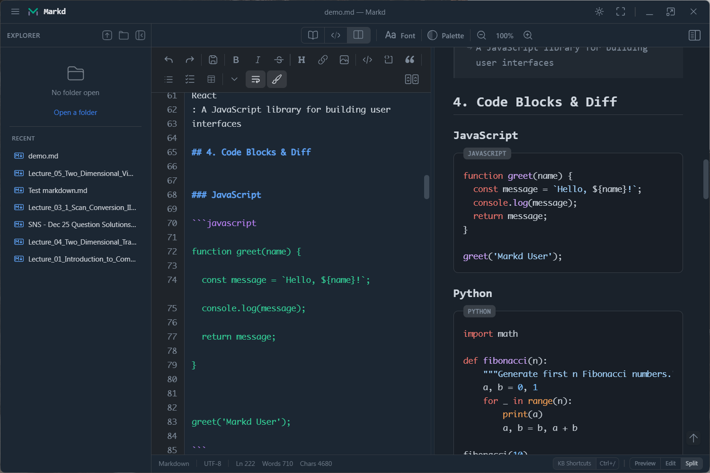
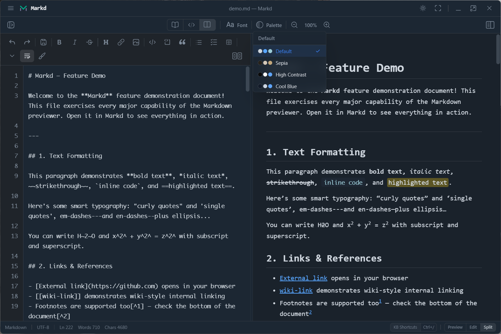

Live split preview
Edit and render side by side with synchronized scrolling that keeps both views aligned.
A focused desktop viewer and editor that keeps writing fluid and makes complex Markdown feel effortless.
Markd keeps your words and their final form side by side, with synchronized scrolling and a calm, responsive workspace.
Note
Everything stays on your device.
Tables, task lists, math, diagrams, wiki links, code blocks, and more.
Move through the viewer, split editor, palettes, and focused reading experience.





Markd balances a capable Markdown engine with a workspace that gets out of your way. Open a file, make your changes, and see the result immediately.
Edit and render side by side with synchronized scrolling that keeps both views aligned.
Automatic list continuation, indentation, bracket wrapping, search, replace, and practical shortcuts.
GitHub-flavored Markdown, footnotes, definition lists, callouts, highlights, and smart typography.
Render LaTeX with KaTeX and turn Mermaid code blocks into clear, useful diagrams.
Browse folders, revisit recent documents, reload from disk, and work with normal Markdown files.
Choose light or dark mode, adjust zoom and fonts, or switch palettes for long-form reading.
Technical notes, project documentation, formulas, flowcharts, or a simple daily journal. Markd renders the details without turning the interface into a cockpit.
Available for Windows through the Microsoft Store, with Linux builds available separately.